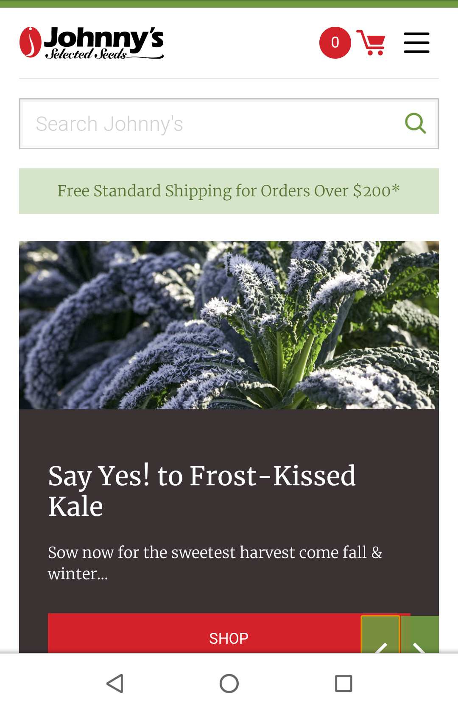
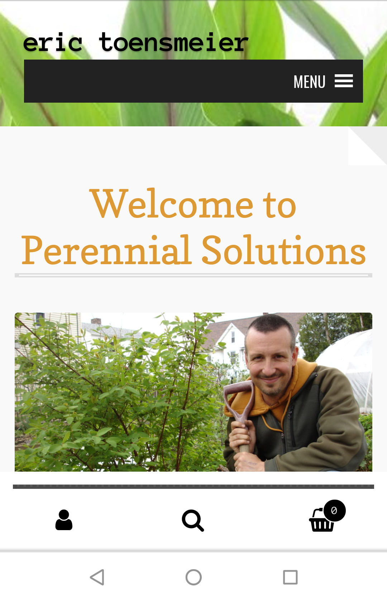
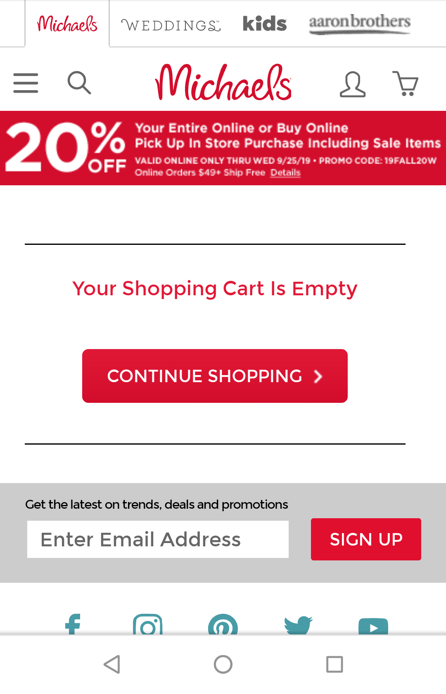

Visual Hierarchy
Johnny's Selected Seeds
www.johnnyseeds.com

Johnny's Selected Seeds demonstrates visual hierarchy.
The large image with a large block of text immediately draws the viewer’s eye to the center of the page.
From there, the viewer is pulled toward the red rectangle with the word shop.
The red at the top of the page brings the viewers eye up to the shopping card, the hamburger menu, and finally the free shipping.
At that point, the viewer is pulled back to the center and started all over again. The important items are viewed in an easy flowing manner.
White Space and Clean Design
Perennial Solutions
www.perennialsolutions.org

This is where the description goes
Repetition
Michaels
www.michaels.com

this is where the description goes